Clinical Human Clone · Team Syntropy · [Wellness] Sustaining Healthy Behaviors
TEMPLATE PENDING
Clinical Human Clone
Goals and barriers change week to week. Generic reminders don't show what they know about you, or why they suggest something.
Synthetic / simulated results · Synthetic data only · Not medical advice · Not tested with people
1 / 9
Who it is for
A person trying to keep a healthy routine going, whose week does not look like last week.
What the prototype does
Check in in a sentence, review what the system understood, see where every value came from, and choose a next step.
Team aim, not a result: a health record the person can see, correct and act on.
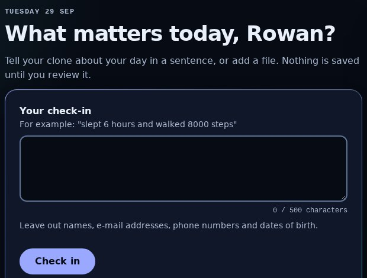
Check-in screen, hosted build (fictional member)
Clinical Human Clone · Team Syntropy · [Wellness] Sustaining Healthy Behaviors
TEMPLATE PENDING
The experience
Check in, review what the system understood, see it in your passport, and choose a next step. Nothing is saved until you confirm it.
Synthetic / simulated results · Synthetic data only · Not medical advice · Not tested with people
2 / 9
1 Check in
One sentence, or one of 4 bundled synthetic files. Voice and video show as not available.
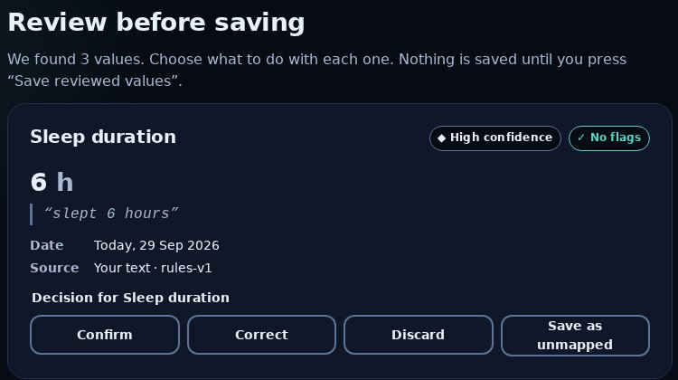
2 Review
One sentence gave 3 values, each with the words it came from. “mood 3 out of 5” gave none.
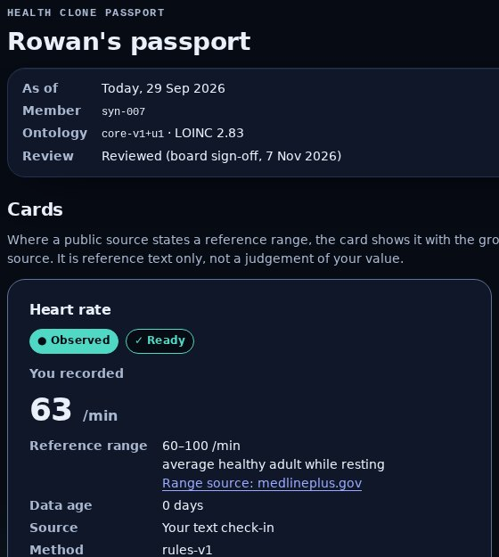
3 Passport
Each card: observed or simulated, data age, source and method.
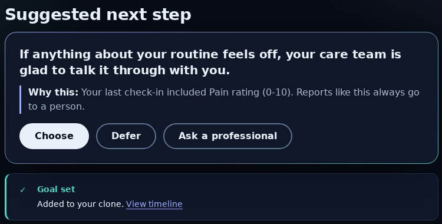
4 Next step
Choose, defer or ask a professional. After a pain report it routes to a person.
Clinical Human Clone · Team Syntropy · [Wellness] Sustaining Healthy Behaviors
TEMPLATE PENDING
How it works
One reproducible path: check-in, proposed values, your review, a scoped memory, the passport and a bounded next step. Each step leaves a trace.
Synthetic / simulated results · Synthetic data only · Not medical advice · Not tested with people
3 / 9
Live, on every check-in
Check-in
a sentence or a bundled synthetic file
→
Safety checks
crisis language and personal data stop here
→
Proposals
fixed rules; each value keeps its words and method
→
Your review
confirm, correct or discard, all at once
→
Memory
confirmed values only, append-only
→
Passport and next step
next step passes the boundary rules
Offline, separate from the live path
Synthetic members and scenarios
175 members, fixed seeds
→
Evaluation
141 held-out synthetic prompts
→
Training
2 fine-tuning stages; a reward model and a small policy
→
Frozen comparison
shown in the research console
Clinical Human Clone · Team Syntropy · [Wellness] Sustaining Healthy Behaviors
TEMPLATE PENDING
Interpretability
Every value shows where it came from, when, how sure the system is, and what it withholds.
Synthetic / simulated results · Synthetic data only · Not medical advice · Not tested with people
4 / 9
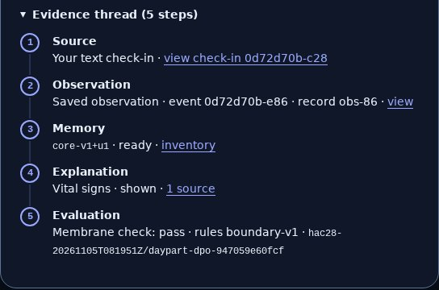
The evidence thread
5 steps, from the check-in to the saved value, its memory version, a public source and the safety check.
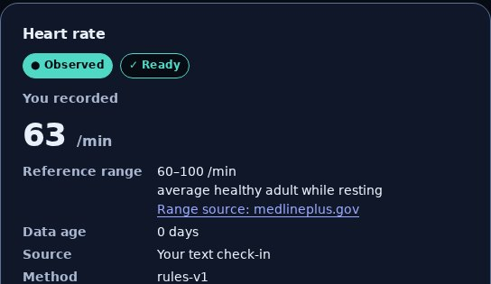
A range, never a verdict
Where a public page states a reference range, it sits beside the value. Nothing is marked high, low or abnormal.
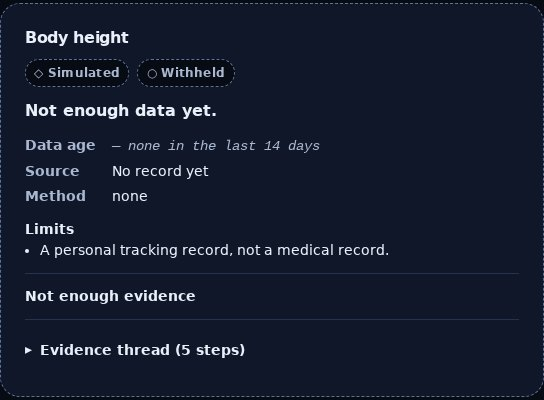
Withheld, not guessed
No value in the last 14 days: the card shows no number and says so.
What it does not know: the inventory lists 5 gaps: lab results, conditions, medications, care history, screenings and check-ups.
Clinical Human Clone · Team Syntropy · [Wellness] Sustaining Healthy Behaviors
TEMPLATE PENDING
Learning and evidence
Two fine-tuning stages beat the base model on 141 held-out synthetic prompts, and a small learned policy was tested with simulated members. None of it is a patient outcome.
Synthetic / simulated results · Synthetic data only · Not medical advice · Not tested with people
5 / 9
Boundary pass rate: prompts passed, of 141 held-out synthetic prompts, seed 0
Base model
45 of 141 (32%)
90 of its 141 replies were empty: most of the gap is empty output, not unsafe text.
Fine-tuned (stage 1)
141 of 141 (100%)
Preference-tuned (stage 2)
141 of 141 (100%)
Weak slice: lapse-recovery check, check-in prompts passed, of 51
Fine-tuned (stage 1)
7 of 51 (14%)
Preference-tuned (stage 2)
6 of 51 (12%)
Simulator: coaching approaches
150 simulated episodes (50 scenarios × 3 seeds), 14 days each. Mean simulated adherence, 0 to 1:
0.840 learned policy (slide 6)
0.833 always problem-solving
0.719 random
0.637 no support
SIMULATED · a message-type policy, not a language model
One seed only, so no spread across seeds is reported. Held-out prompts are synthetic, not written by people.
Clinical Human Clone · Team Syntropy · [Wellness] Sustaining Healthy Behaviors
TEMPLATE PENDING
What helps this member
Seven short questions, a reward model you can read term by term, and a small learned policy turn simulated answers into next steps, each with its reason.
Synthetic / simulated results · Synthetic data only · Not medical advice · Not tested with people
6 / 9
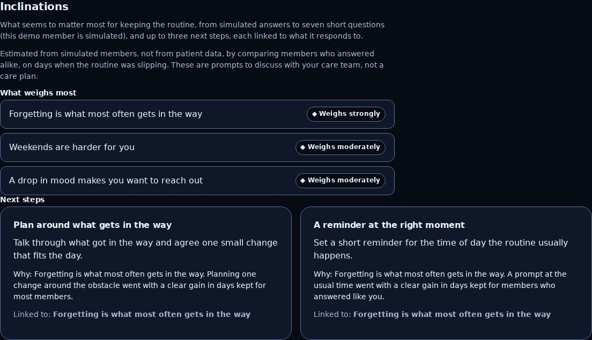
Passport, Inclinations: what weighs most and linked next steps (simulated member)
1 Question library (Jev)
7 check-in questions. On 58 held-out simulated members the answers recover each hidden trait 76–91% of the time (chance 17–33%).
2 Reward model
Every score is a sum of named terms that add up exactly. Its top message type matches the simulator's for 83% of held-out members (chance 17%). It predicts no better than status alone (AUC 0.833 vs 0.834): its value is the explanation.
3 Learned policy (GRPO)
Mean simulated adherence 0.840 against 0.833 for the best scripted approach and 0.637 with no support, 0 rule violations. Small gain, same-day reward only.
SIMULATED · answers and members are synthetic · CPU only, no new spend
Clinical Human Clone · Team Syntropy · [Wellness] Sustaining Healthy Behaviors
TEMPLATE PENDING
Responsible AI and limits
The prototype refuses what it should not do, and shows you when it does.
Synthetic / simulated results · Synthetic data only · Not medical advice · Not tested with people
7 / 9
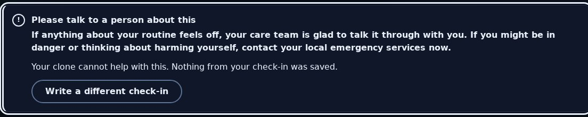
Crisis language: a fixed hand-off to a person. Nothing is extracted or saved.
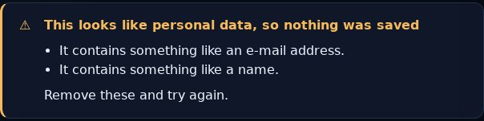
Personal data: refused whole. Nothing is saved.
Real health data: switched off
There is no screen to turn it on. If asked directly, the server refuses (403): 12 of 12 governance gates are open and unassigned, and enabling real input also needs a code change.
Limits
Synthetic data only. No diagnosis, treatment or dosing. No clinical review: content carries a board sign-off, not a clinician's.
The boundary rules caught 74 of 74 labelled violations, with 0 false alarms on 128 compliant rows of a 202-row test set. That is a measurement on that set, not a proof.
Clinical Human Clone · Team Syntropy · [Wellness] Sustaining Healthy Behaviors
TEMPLATE PENDING
Feasibility and path to deployment
It runs today as a hosted prototype. Reaching people needs consent, privacy, security, clinical oversight and a validation study first.
Synthetic / simulated results · Synthetic data only · Not medical advice · Not tested with people
8 / 9
Runs today. Redeployed only when every check passes; the hosted journey passed 9 of 9 steps.
Governance gates for real input: 12 of 12 open
Lawful basis
Informed consent
Access control
Encryption
Retention and deletion
Audit log
Incident response
Processor terms
Jurisdiction review
Clinical intended use
Qualified oversight
Regulatory classification
Path to clinical validation: none started
1
Name a qualified clinical reviewer and the intended use
CONCEPT
2
Close the 12 governance gates; real input also needs a code change
CONCEPT
3
Clinical review of content, rules and boundary rules
CONCEPT
4
Stronger evaluation: more seeds, a larger set written by people
CONCEPT
5
Consented, supervised pilot with a pre-registered measure
CONCEPT
6
Then decide whether the learned policy is used with people
CONCEPT
No cost, latency or scale figure: none is measured.
Clinical Human Clone · Team Syntropy · [Wellness] Sustaining Healthy Behaviors
TEMPLATE PENDING
Impact and next steps
What it would take to show this helps people: a named clinical reviewer, a consented pilot and a pre-registered measure.
Synthetic / simulated results · Synthetic data only · Not medical advice · Not tested with people
9 / 9
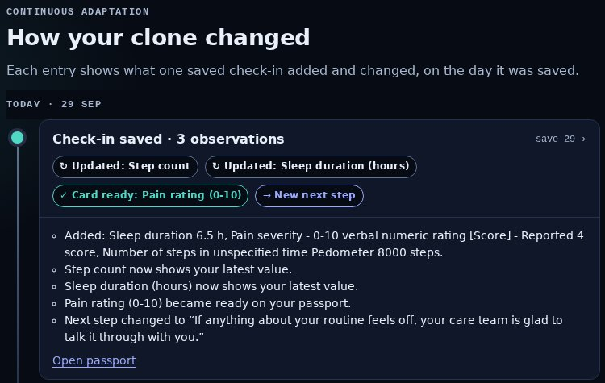
Timeline: what each saved check-in changed (fictional member)
Next steps
1.
Name a clinical reviewer
CONCEPT
2.
Close the 12 governance gates
CONCEPT
3.
Grow the learned policy beyond message type
CONCEPT
4.
Run a consented pilot with a pre-registered measure
CONCEPT
Aim, not a result: people keep healthy routines with a record they can see, correct and act on.